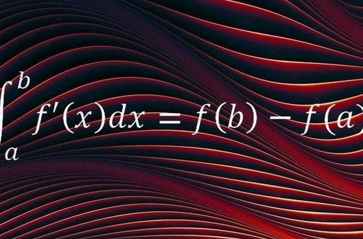
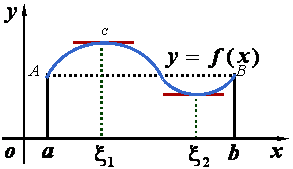
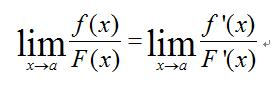
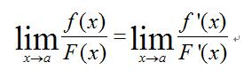
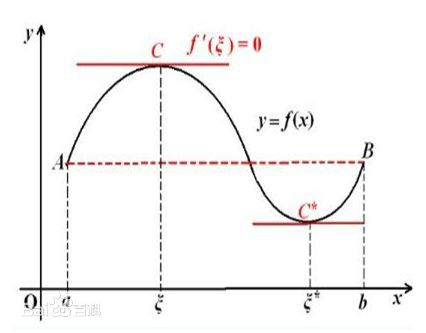
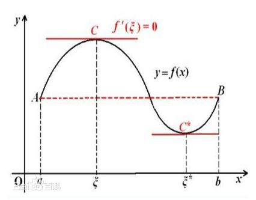

我的学习博客
不要轻易放弃。学习成长的路上，我们长路漫漫，只因学无止境。
浅谈：牛顿-莱布尼兹

其实牛顿和莱布尼兹是两个人，牛顿是英国著名的物理学家，研究的方面比较广泛。
莱布尼兹是德国数学家哲学家，在数学史和哲学史上都占有重要地位。
牛顿先发明了微积分，但他更多的是从物理运动方面来叙述的且没有正式公开发布，
而莱布尼茨则晚牛顿几年发现，但他先发表于世，而且他是从数学极限方面来叙述，而且现在我们使用的微积分符号大部分是莱布尼茨首创，如dx,dy,等。
他们的发现都是独立的，因此把他们俩一起作为微积分的创始者
更多介绍请点击这里
笛卡尔-- 心形线
.jpg) 笛卡尔是法国著名的哲学家、物理学家、数学家，他对现代数学的发展做出了重要的贡献，
同时为广大理工科学子也带来了表白神器(r=a(1-sinθ）)。
笛卡尔是法国著名的哲学家、物理学家、数学家，他对现代数学的发展做出了重要的贡献，
同时为广大理工科学子也带来了表白神器(r=a(1-sinθ）)。接到通知，国王聘请他做小公主的数学老师,小公主的数学在笛卡尔的悉心指导下突飞猛进, 每天形影不离的相处使他们产生了爱情的火花,但国王知道后打发雷霆并下令将笛卡尔处死, 最后在公主的哀求下才被流放法国，期间笛卡尔和公主书信联系但笛卡尔流落在寒冷的街头身患重病 在最后的时刻写了最后一封信就是“心形线”坐标(r=a(1-sinθ）)。
更多关于请点击这里
更多相关知识
拉格朗日定理
 如果函数f(x)满足： 1.在闭区间[a,b]上连续; 2. 在开区间(a,b)内可导; 那么在(a,b)内至少有一点ξ(a《ξ《b), 使等式f(a)-f(b)=f'(ξ)(b-a)成立。
更多相关请点击这里
洛必达法则
 ⑴x→a时，lim f(x)=0,lim F(x)=0; ⑵在点a的某去心邻域内f(x）与F(x）都可导，且F(x）的导数不等于0; ⑶x→a时，lim(f'(x)/F'(x)）存在或为无穷大 则 x→a时,lim(f(x)/F(x))=lim(f'(x)/F'(x))。
更多相关请点击这里
 ⑴x→a时，lim f(x)=0,lim F(x)=0; ⑵在点a的某去心邻域内f(x）与F(x）都可导，且F(x）的导数不等于0; ⑶x→a时，lim(f'(x)/F'(x)）存在或为无穷大 则 x→a时,lim(f(x)/F(x))=lim(f'(x)/F'(x))。
更多相关请点击这里
罗尔中值定理
 如果 R 上的函数 f(x) 满足以下条件：（1）在闭区间 [a,b] 上连续，（2）在开区间 (a,b) 内可导，（3）f(a)=f(b)，则至少存在一个 ξ∈(a,b)，使得 f'(ξ)=0。
更多相关请点击这里
 如果 R 上的函数 f(x) 满足以下条件：（1）在闭区间 [a,b] 上连续，（2）在开区间 (a,b) 内可导，（3）f(a)=f(b)，则至少存在一个 ξ∈(a,b)，使得 f'(ξ)=0。
更多相关请点击这里